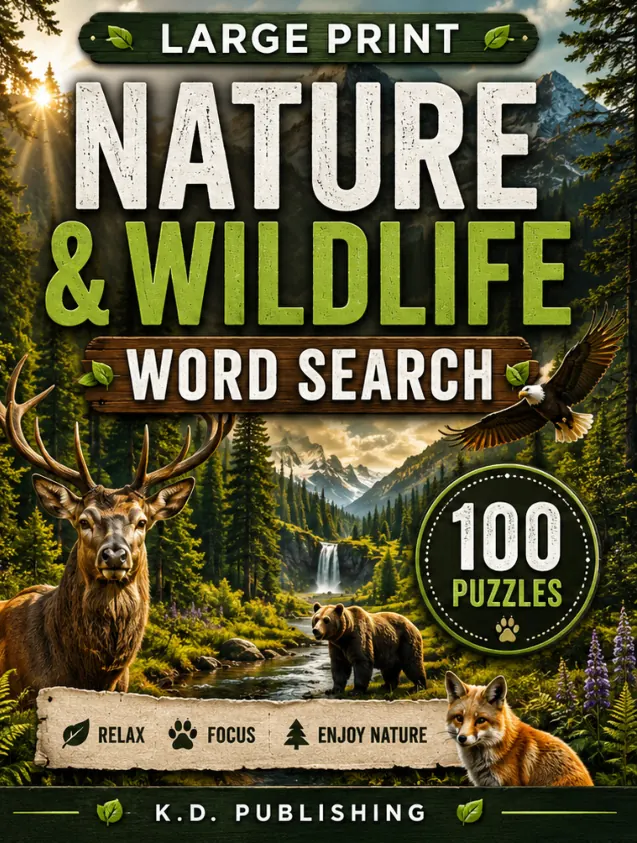
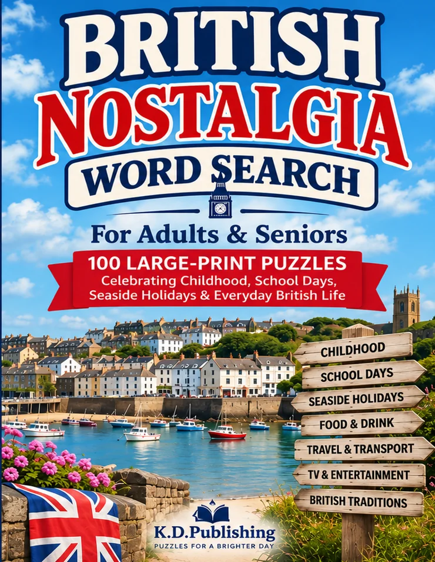
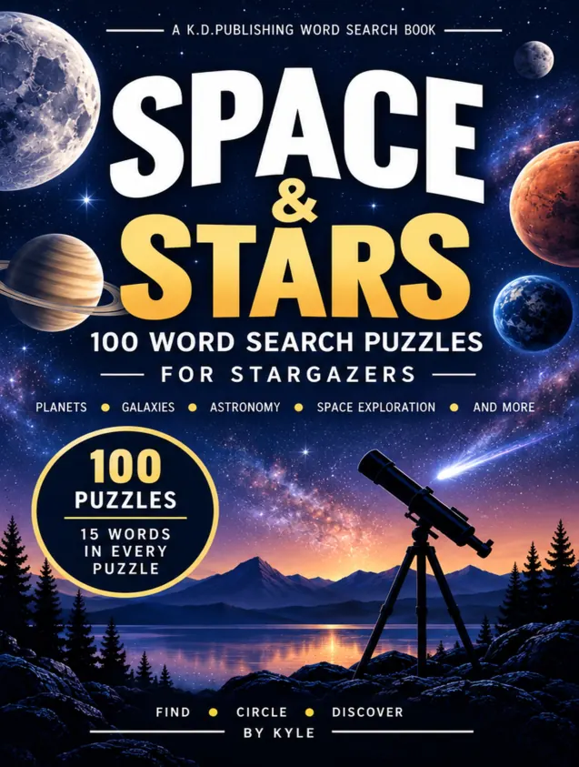
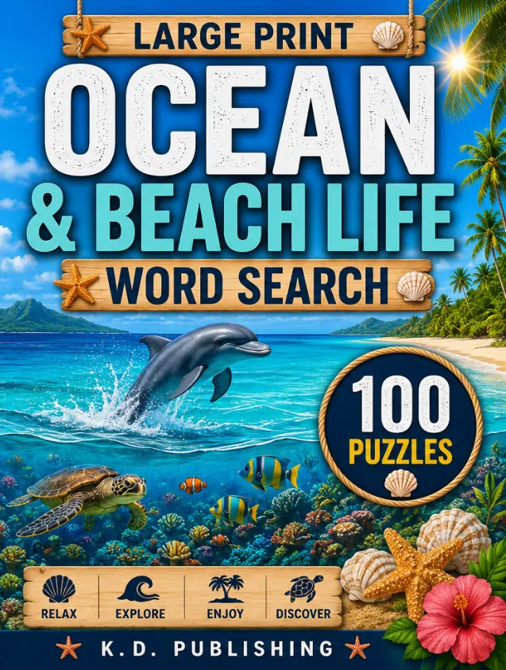

Word Search & Puzzle Books
Nature & Wildlife Word Search Puzzle Book for Adults
100 Outdoor Puzzles — Animals, Forests, Birds & National Parks with Full Answer Key
Outdoor-themed word searches covering animals, forests, birds and national parks.
Amazon handles your order. Prices and availability may change there.
- Format
- Paperback
- Author
- Kyle Dyer
- Collection
- Word Search & Puzzle Books
- ASIN
- B0HDK4QDNH
Actual book pages
Look inside
Reduced-size samples from the finished interior. Tap a page for a closer look.
Keep exploring
View category More from this shelf

Word Search & Puzzle Books
British Nostalgia Word Search
100 large-print British nostalgia word searches for adults and seniors, with familiar memories of childhood, school days and seaside holidays.
See inside
Word Search & Puzzle Books
Space & Stars
Word searches inspired by planets, galaxies and astronomy, with an answer key.
See inside
Word Search & Puzzle Books
Ocean & Beach
Ocean, beach and sea-life themed word searches with an answer key.
See inside